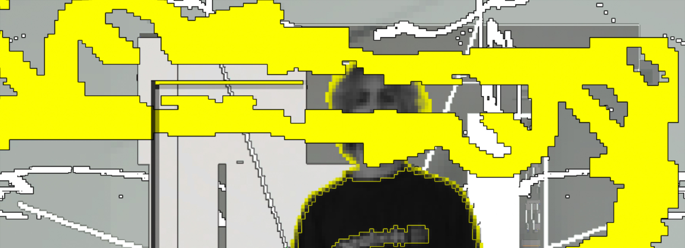
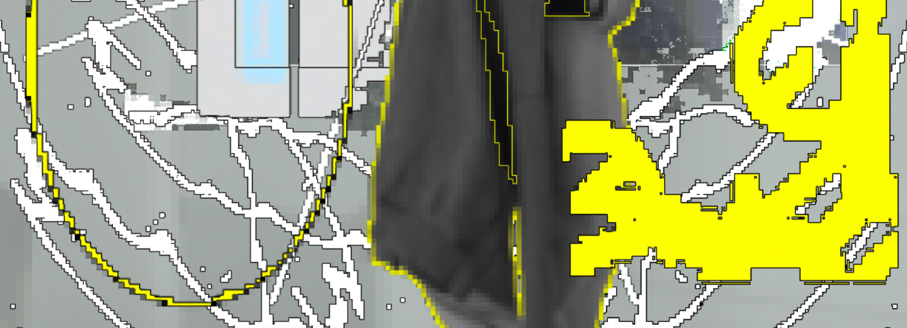

Je m'appelle Lou DHÉRIN, étudiant à l'ELMAD Auguste Renoir (18e). J'explore explore les thèmes variés à travers divers médiums tels que le design graphique, la musique ou le dessin. J'aime expérimenter avec les formes et les matériaux pour créer des projets qui ont de la gueule.
